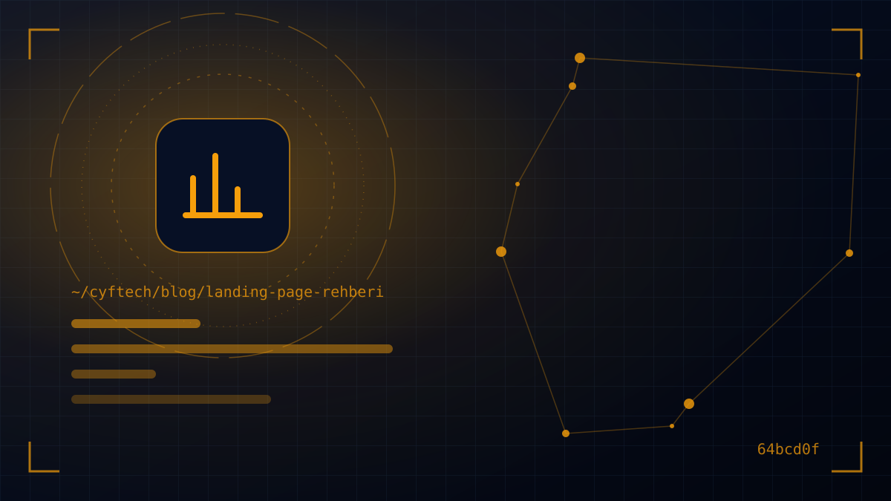

Google Ads ya da sosyal medya reklamına tıklayan kişiyi ana sayfanıza gönderiyorsanız, büyük ihtimalle bütçenizin bir kısmını boşa harcıyorsunuz. Landing page (açılış sayfası), reklamın verdiği sözü tek bir sayfada tutan ve ziyaretçiyi tek bir eyleme yönlendiren sayfadır.
Ana sayfa her şeyi anlatmaya çalışır: hizmetler, hakkımızda, blog, iletişim. Reklamdan gelen ziyaretçi ise belirli bir şeyi aramaktadır ve bu kalabalığın içinde kaybolur. İyi bir landing page, bu ziyaretçiye tam aradığını gösterir ve sonraki adımı kolaylaştırır.
Bu rehberde landing page nedir, hangi türleri vardır, hangi bileşenler olmadan çalışmaz sorularını yanıtlıyor; ardından bir açılış sayfasını adım adım nasıl hazırlayacağınızı, reklam ve SEO ile ilişkisini ve sık yapılan hataları anlatıyoruz.
Landing page nedir, ana sayfadan farkı ne?
Landing page, Türkçede açılış ya da varış sayfası olarak geçer: ziyaretçinin bir reklam, e-posta, sosyal medya paylaşımı veya kampanya bağlantısına tıkladıktan sonra ulaştığı, tek bir teklife ve tek bir hedefe odaklanan sayfadır. Teknik olarak sitenizdeki herhangi bir sayfa “ilk açılan sayfa” olabilir; ama pazarlamada landing page denince bu amaçla özel tasarlanmış sayfa kastedilir.
| Özellik | Ana sayfa | Landing page |
|---|---|---|
| Amaç | Firmayı genel olarak tanıtmak | Tek bir eylemi yaptırmak |
| Hedef kitle | Herkes | Belirli bir kampanyanın kitlesi |
| Bağlantılar | Menü, çok sayıda iç bağlantı | Az ya da hiç yönlendirme; tek ana buton |
| İçerik | Tüm hizmetlerin özeti | Tek ürün, hizmet ya da teklif |
| Ölçüm | Genel trafik ve etkileşim | Net dönüşüm oranı |
Kısacası ana sayfa bir mağazanın vitrini, landing page ise belirli bir ürün için kurulmuş, satış danışmanı olan bir stanttır.
Hedefe göre landing page türleri
Sayfanın yapısı, ziyaretçiden ne istediğinize göre değişir. En yaygın türler şunlardır:
- Potansiyel müşteri (lead) toplama sayfası: Teklif formu, ücretsiz keşif, demo talebi ya da e-kitap karşılığı iletişim bilgisi alır. Hizmet sektöründe en sık kullanılan türdür.
- Satış sayfası: Tek bir ürünü ya da paketi doğrudan satar. Genellikle daha uzundur; itirazları tek tek yanıtlar.
- Tıklama geçiş (click-through) sayfası: Ürünü tanıtır ve ziyaretçiyi ödeme ya da kayıt sayfasına “ısınmış” olarak gönderir. E-ticaret kampanyalarında yaygındır.
- Etkinlik ve webinar kayıt sayfası: Tarih, konuşmacılar, program ve kayıt formu.
- Uygulama indirme sayfası: Mobil uygulamanın faydalarını gösterir, App Store ve Google Play butonlarına yönlendirir.
Bir türü seçmek, sayfadaki her kararı kolaylaştırır: form mu olacak, buton mu; sayfa kısa mı olacak, uzun mu?
Etkili bir landing page’in olmazsa olmaz bileşenleri
Sektör ne olursa olsun, iyi çalışan açılış sayfalarında şu bileşenler neredeyse her zaman bulunur:
- Reklamla uyumlu başlık: Ziyaretçinin tıkladığı reklamdaki vaadi aynen tekrar eden, fayda odaklı bir ana başlık.
- Açıklayıcı alt başlık: Teklifi bir cümleyle somutlaştırır: kime, ne, nasıl.
- Güçlü görsel: Ürünün kendisi, ekran görüntüsü, sonuç fotoğrafı ya da kısa bir tanıtım videosu.
- Faydalar listesi: Özellikleri değil, ziyaretçinin elde edeceği sonuçları anlatan üç-beş madde.
- Sosyal kanıt: Müşteri yorumları, referans logoları, tamamlanan proje sayısı, puanlar.
- Tek ve net eylem çağrısı: “Ücretsiz teklif alın”, “Demo planlayın” gibi sonucu anlatan bir buton; uzun sayfalarda aynı buton birkaç kez tekrarlanabilir.
- Kısa form: Yalnızca gerçekten ihtiyaç duyduğunuz bilgiler.
- Sık sorulan sorular: Fiyat, süre, garanti gibi karar anındaki itirazları yanıtlayan kısa bir bölüm.
Bu bileşenlerin arkasındaki genel UX ilkelerini dönüşüm odaklı web tasarım yazımızda daha ayrıntılı ele aldık.
Landing page nasıl hazırlanır? 7 adımda süreç
Projelerimizde açılış sayfalarını hazırlarken izlediğimiz süreç şu yedi adımdan oluşur:
- 1. Adım — Tek hedef belirleyin. Bu sayfa başarılı olursa ziyaretçi ne yapmış olacak? Form mu dolduracak, arayacak mı, satın mı alacak? Tek bir cevap seçin.
- 2. Adım — Kitleyi ve trafik kaynağını tanımlayın. Google aramasından gelen, sorununa çözüm arayan biri ile Instagram’da reklamı gören biri farklı bilgi düzeyindedir; sayfa da buna göre konuşmalıdır.
- 3. Adım — Teklifi netleştirin. Neden şimdi harekete geçmeli? Ücretsiz keşif, sınırlı süreli indirim, deneme süresi ya da somut bir garanti.
- 4. Adım — Önce metni yazın. Başlık, faydalar, itiraz yanıtları ve buton metni hazır olmadan tasarıma geçmeyin. Tasarım, metni taşıyan bir çerçevedir.
- 5. Adım — Mobil öncelikli tasarlayın. Reklam trafiğinin büyük kısmı telefondan gelir. Önce telefon ekranını kurgulayın, sonra masaüstüne genişletin.
- 6. Adım — Ölçümü kurun. Form gönderimi ve telefon tıklamasını analitik ve reklam panelinde dönüşüm olarak tanımlayın; bağlantılara kampanya parametreleri (UTM) ekleyin.
- 7. Adım — Yayınlayın ve test edin. İlk sürüm hiçbir zaman son sürüm değildir. Veriler geldikçe başlığı, görseli ve formu test ederek iyileştirin.
Landing page ve Google Ads: kalite puanını etkileyen sayfa deneyimi
Google Ads, arama kampanyalarında reklamlarınızı değerlendirirken kalite puanı adı verilen bir teşhis aracı kullanır. Google’ın yardım sayfasına göre kalite puanının üç bileşeni vardır: beklenen tıklama oranı, reklam alaka düzeyi ve açılış sayfası deneyimi. Açılış sayfası deneyimi, sayfanızın reklama tıklayan kullanıcılar için ne kadar alakalı ve faydalı olduğunu ifade eder ve aynı aramada reklam gösteren diğer reklamverenlerle kıyaslanarak “ortalamanın üstünde”, “ortalama” ya da “ortalamanın altında” şeklinde derecelendirilir.
Pratikte bu, açılış sayfasının reklam bütçenizin verimini doğrudan etkilediği anlamına gelir. Sayfa deneyimini iyileştirmek için:
- Mesaj eşleşmesi: Reklamda “aynı gün kurulum” diyorsanız, sayfanın ilk ekranında da bunu görün.
- Anahtar kelimeye özel içerik: Farklı arama niyetleri için farklı sayfalar ya da en azından farklı başlıklar kullanın.
- Şeffaflık: Firma bilgileri, iletişim kanalları ve gizlilik politikasına kolay erişim sağlayın.
- Hız ve mobil uyum: Mobilde hızlı açılan, kolay gezilen bir sayfa hem kullanıcıyı hem reklam performansını korur.
Reklam mı yoksa organik trafik mi sorusunu ise Google Ads mi SEO mu yazımızda karşılaştırdık.
Landing page ve SEO: organik trafikte açılış sayfası kullanmak
Açılış sayfaları yalnızca reklam için değildir; iyi kurgulanmış bir hizmet sayfası aynı zamanda organik aramada da güçlü bir landing page olabilir. Ancak burada bilinmesi gereken birkaç kural var:
- İnce içerikten kaçının: Yalnızca bir başlık ve formdan oluşan sayfalar reklamda çalışabilir ama organik aramada sıralanmaz. Organik hedef varsa sayfa, konuyu gerçekten açıklayan dolu bir içeriğe sahip olmalı.
- Kapı sayfası (doorway) tuzağı: Google’ın spam politikaları, benzer aramalarda sıralanmak için üretilen ve kullanıcıyı asıl sayfaya yönlendiren ara sayfaları açıkça ihlal olarak tanımlıyor. Şehir şehir neredeyse aynı metinle çoğaltılmış sayfalar bu kapsama girebilir.
- Kampanya kopyalarını dizine kapatın: A/B testleri ya da kısa süreli kampanyalar için oluşturulan neredeyse aynı sayfaları “noindex” ile arama sonuçlarının dışında tutmak, yinelenen içerik karmaşasını önler.
SEO’nun temellerini ise SEO nedir yazımızda başlangıç seviyesinden anlattık.
A/B testi ve ölçüm: landing page’i nasıl iyileştirirsiniz?
Landing page’in en güzel yanı ölçülebilir olmasıdır: tek bir hedef olduğu için başarıyı da tek bir oranla izlersiniz. Bu oranı iyileştirmenin yolu düzenli testtir.
Neyi test etmeli?
- Başlık: Fayda odaklı mı, sorun odaklı mı? Genellikle en büyük etki buradan gelir.
- Eylem çağrısı: Buton metni, rengi ve konumu.
- Form uzunluğu: Daha az alan daha çok talep getirebilir; daha fazla alan ise daha nitelikli talep. Sizin için hangisi değerli?
- Görsel: Ürün ekranı mı, insan fotoğrafı mı, video mu?
- Sayfa uzunluğu: Pahalı ve düşünülerek alınan hizmetlerde uzun sayfa, hızlı kararlarda kısa sayfa genellikle daha iyi çalışır; ama bunu da test edin.
Doğru test için kurallar
Her seferinde tek bir değişkeni değiştirin, iki sürümü aynı dönemde ve benzer trafikle çalıştırın, sonuca yeterli veri birikmeden karar vermeyin. Kampanya bağlantılarına UTM parametreleri ekleyerek hangi reklamın ve kanalın dönüşüm getirdiğini Google Analytics’te ayrı ayrı görebilirsiniz.
İyi bir landing page tasarlanmaz, test edilerek bulunur.
Landing page hazırlarken sık yapılan 6 hata
- Reklam trafiğini ana sayfaya göndermek: Ziyaretçi aradığını bulmak için menüde dolaşmak zorunda kalır.
- Birden fazla hedef: Aynı sayfada hem teklif formu hem bülten kaydı hem katalog indirme, dikkati böler.
- Reklamla uyumsuz mesaj: Reklamda indirim vaat edip sayfada indirimden bahsetmemek güveni anında kırar.
- Yavaş açılış: Ağır videolar ve optimize edilmemiş görseller, ziyaretçiyi sayfa açılmadan kaybettirir.
- Ölçümsüz yayın: Dönüşüm takibi kurulmadan başlatılan kampanya, hangi kuruşun işe yaradığını bilmeden para harcamak demektir.
- Yasal metinleri unutmak: Formla kişisel veri topluyorsanız KVKK aydınlatma metni ve gerekiyorsa açık rıza onayı eklenmelidir. Bu not hukuki danışmanlık değildir; ayrıntılar için bir hukukçuya danışın.
- Sayfanın tek bir hedefi ve tek bir ana butonu var mı?
- Başlık, reklamdaki vaatle birebir uyumlu mu?
- Mobil görünüm ve açılış hızı test edildi mi?
- Form yalnızca gerekli alanları mı içeriyor?
- Dönüşüm takibi ve UTM parametreleri kuruldu mu?
- KVKK aydınlatma metni bağlantısı formda mı?
- Teşekkür sayfası ve sonraki adım tanımlı mı?
Sık sorulan sorular
Landing page ile web sitesi arasındaki fark nedir?
Web sitesi firmanızı ve tüm hizmetlerinizi tanıtan çok sayfalı bir yapıdır. Landing page ise belirli bir kampanya ya da teklif için hazırlanan, tek bir hedefe odaklanan ve ziyaretçiyi tek bir eyleme yönlendiren sayfadır. Landing page genellikle web sitenizin içinde yer alır.
Landing page ne kadar uzun olmalı?
Teklifin karmaşıklığına ve fiyatına bağlıdır. Ücretsiz bir e-kitap ya da basit bir kayıt için kısa bir sayfa yeterliyken, pahalı ve düşünülerek alınan hizmetlerde itirazları yanıtlayan daha uzun bir sayfa genellikle daha iyi sonuç verir. En doğru cevabı test verir.
Landing page SEO’ya katkı sağlar mı?
Konuyu kapsamlı anlatan, kullanıcıya gerçekten faydalı bir açılış sayfası organik aramada da sıralanabilir. Ancak yalnızca form ve kısa bir başlıktan oluşan reklam sayfaları ile neredeyse aynı içerikle çoğaltılmış sayfalar organik aramada genellikle başarılı olmaz.
Landing page hazırlamak için hangi araçlar kullanılır?
Hazır sürükle-bırak landing page araçları, WordPress gibi içerik yönetim sistemleri ya da sitenize özel olarak kodlanan sayfalar kullanılabilir. Hızlı test için hazır araçlar pratiktir; uzun soluklu kampanyalarda hız, ölçüm ve marka bütünlüğü açısından kendi sitenizde yayınlanan sayfalar daha avantajlıdır.
Her reklam için ayrı landing page gerekir mi?
Her reklam için değil ama her farklı teklif, hizmet ya da arama niyeti için ayrı bir açılış sayfası önerilir. Böylece reklamdaki mesaj ile sayfadaki mesaj birebir örtüşür ve hem dönüşüm oranı hem de Google Ads’teki açılış sayfası deneyimi olumlu etkilenir.
Son söz
Landing page; tek bir hedef, reklamla uyumlu bir mesaj, ikna edici bir teklif ve kolay bir eylemden oluşur. Doğru hazırlandığında reklam bütçenizden aldığınız sonucu artırır, yanlış hazırlandığında ise en iyi kampanyayı bile boşa çıkarır. En önemlisi, ilk sürümü yayınlayıp veriye göre iyileştirmeye devam etmektir.
Kampanyalarınız için hızlı açılan, ölçümü kurulmuş ve markanıza uygun açılış sayfaları hazırlamak isterseniz bizimle iletişime geçin. Tasarım ve geliştirme hizmetlerimizi web çözümleri sayfamızda inceleyebilirsiniz.
- Google Ads Yardım — Kalite Puanı hakkında
- Google Ads Yardım — Açılış sayfası deneyimi
- Google Search Central — Google web araması için spam politikaları
- Google Search Central — noindex ile dizine eklemeyi engelleme
- Google Analytics Yardım — URL oluşturucularla kampanya verileri (UTM)
- KVKK — Kişisel Verileri Koruma Kurumu